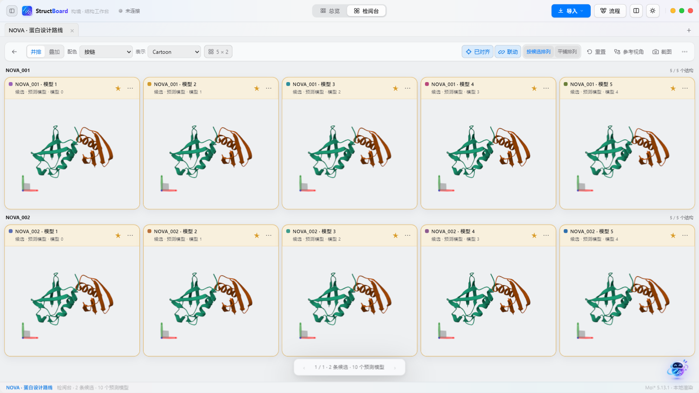
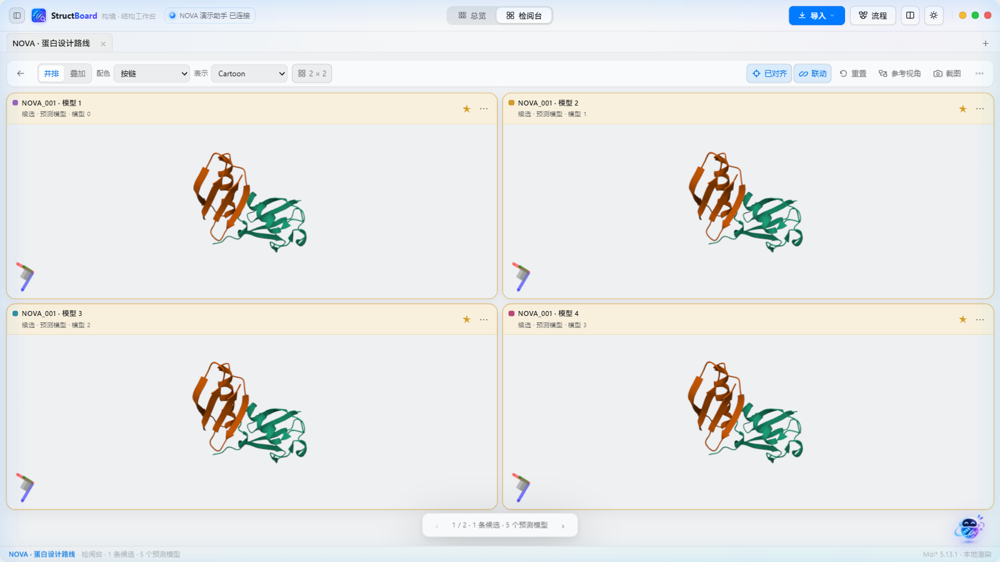

AI PROTEIN DESIGN
让蛋白设计，看清下一步。
把设计路线、候选模型与筛选依据放在一个工作台。
从全局路线到结构细节，自由浏览、比较与检阅。
30 秒 · 白色界面实录 · 中文配音 · 点击播放
一眼把握设计路线
节点和连线自由调整，也可一键自动整理。查看生成、预测、筛选与复核如何衔接。

多个候选，放在一起比较
结构对齐、视角联动，按候选排列或逐个平铺。

一边浏览，一边检阅
左侧查看总览，右侧比较结构。管线独立分标签，也能拆成多个窗口。

让 AI 读懂当前工作区
MCP 按授权连接客户端。内置助手继续追查、折叠过程，优先给出简短结论；修改数据需确认。
